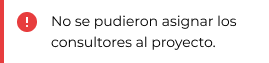

Operaciones
La sección de Operaciones es el núcleo de la aplicación, donde los usuarios pueden gestionar y visualizar información crucial relacionada con un cliente específico y un rango de fechas determinado. Al ingresar a esta sección, los usuarios deberán seleccionar el cliente de interés y, de manera opcional, pueden ajustar el rango de fechas para obtener datos precisos. Por defecto, se mostrarán los datos con la fecha actual como inicio y el día siguiente como fecha de finalización.
Vista General
En esta sección, presentamos tres tarjetas (cards) que contienen información relevante sobre las asignaciones, posiciones y consultores asociados con el cliente seleccionado.
Asignaciones
En esta tarjeta, visualizamos todas las asignaciones existentes para el cliente seleccionado en el rango de fechas determinado. Cada asignación incluirá detalles esenciales como el Cliente, Rol, FTE (Full time equivalent), Consultor y la fecha de inicio, la fecha de finalización. Los usuarios pueden obtener una visión general de cuantas asignaciones tiene un cliente en específico también se puede visualizar todas las asignaciones actuales en todos los clientes seleccionado todos.
Posiciones
En esta tarjeta, se listan todas las posiciones disponibles con estado “Open” para el cliente. Cada posición incluirá información sobre el tipo de puesto, el rol, área, FTE (Full time equivalent), descripción, estado, fecha de inicio y fecha de finalización. Esto permite a los usuarios conocer las posiciones actuales para el cliente específico y evaluar la demanda y necesidades de consultores.

Si queremos visualizar todas las posiciones con todos los consultores cuyo estado no esté en “Open” se debe seleccionar la casilla que dice “Mostrar todos los consultores”.
Consultores
Esta tarjeta nos brinda acceso a la información detallada de los consultores disponibles y los consultores asignados con la posición seleccionada. Se nos abrirá una vista completa de los consultores disponibles mejores calificados para la posición, y también abajo una vista de consultores que actualmente están asignados a posiciones específicas. Acá podemos realizar dos acciones principales: Asignar consultor, Asignar nuevo consultor y Retirar consultor asignado.
Estas acciones se detallan más abajo:
Para que todos los cambios se guarden en el sistema es importante que usemos el botón de guardar cambios y esperar el mensaje de confirmación de que se llevó a cabo con éxito el proceso.
Funciones Principales
Barra de Filtrado

La barra de filtrado nos permitirá seleccionar un cliente especifico y seleccionar un rango de fechas en donde se quiera realizar la consulta, también existe la posibilidad de ver todos los clientes juntos seleccionando “Todos”.
- Abrimos la selección de los clientes usando la barra despegable.
- Seleccionamos un cliente específico de la lista.
- Elegimos un rango de fechas deseado para la consulta.
- Opcionalmente, podemos hacer clic en la opción “Todos” para ver todos los clientes juntos. Los cambios se actualizan automáticamente al cambiar alguno de estos valores.
Borrar filtro actual
- Para borrar el filtro actual solo debemos seleccionar el icono de borrado al costado de la barra despegables de clientes.
Ver descripción o detalle de una posición
En la tabla de posiciones tenemos diferentes tipos de acciones una de ellas es la opción de ver la descripción de la posición, seleccionando el icono se abrirá un modal con dicha información.
- Localizamos la tabla de posiciones.
- Identificamos la columna de descripción.
- Buscamos el icono designado para ver la descripción (icono de ojo).
- Hacemos clic en el icono.
- Se nos abrirá un modal emergente con la información detallada.
Ver consultores para dicha posición
En la tabla de posiciones tenemos también la opción de consultores, seleccionándolo se mostrará en la tabla de consultores todos aquellos que estén asignados a esa posición y también una lista de consultores disponibles para asignar.
- Localizamos la tabla de posiciones.
- Localizamos la columna “Descripción”.
- Identificamos el icono designado para mostrar los consultores (silueta de personas).
- Hacemos clic en el icono.
- Automáticamente en la parte inferior debería mostrarse la tabla de consultores de esa posición.
- La tabla de consultores se actualizará para mostrar los consultores asignados a esa posición.
- Junto a los consultores asignados, se listarán también los consultores sin asignar a esa posición.
Filtro de búsqueda de consultores
En la tabla de consultores, contaremos con la funcionalidad de filtrar los consultores disponibles por nombre. Esta útil herramienta facilita la búsqueda y ubicación rápida del consultor deseado en la lista. Al ingresar el nombre del consultor en el filtro, la tabla mostrará automáticamente los resultados coincidentes, permitiendo a los usuarios localizar de manera eficiente al consultor buscado sin la necesidad de revisar toda la lista. Esta característica agiliza la gestión y asignación de consultores a posiciones específicas, mejorando la experiencia del usuario.
- Localizamos la tabla de consultores.
- Identificamos el campo de filtro de búsqueda, aparece con un placeholder con la palabra ‘Buscar…’.
- Ingresamos el nombre o apellido del consultor que se desea buscar en el campo de filtro.
- A medida que se escribe el nombre, la tabla comenzará a mostrarnos automáticamente los resultados coincidentes en tiempo real.
- Identificamos el consultor en la tabla, ya se encuentra listo para iniciar el proceso de asignar un consultor detallado más abajo.
Atención:
Si en la lista no aparece algún consultor, es posible que dicho consultor esté marcado como ‘no asignable’ o que ya tenga la totalidad de su FTE (Tiempo Completo) asignado a otras tareas. En tales casos, podemos activar la casilla de ‘Mostrar todos los consultores’, que nos mostrará la lista completa de consultores sin excepción. Esto permite acceder a todos los consultores registrados en la base de datos, independientemente de su estado de asignación o FTE actual. Al activar esta opción, vamos a tener una visión completa de todos los consultores.
Asignar un consultor
Vamos a poder asignar un nuevo consultor a una posición disponible. Para llevar a cabo esta acción, siga los pasos a continuación:
- Ubicar y seleccionar un consultor de la tabla de consultores disponibles.
- Completar los campos de FTE (Full Time Equivalent) para especificar la cantidad de tiempo que el consultor trabajará en la posición.
- Ingresar el valor correspondiente en el campo de FTE. Los valores típicos son 1 FTE para tiempo completo y 0.5 FTE para medio tiempo, también se pueden ingresar valores como 0.2, 0.8 según la disponibilidad del consultor.
- Ingresar la fecha de inicio de la asignación haciendo clic en el campo INICIO y colocar la fecha correspondiente,
- Ingresar la fecha de finalización de la asignación haciendo clic en el campo FINAL y colocar la fecha correspondiente
- Una vez completado todos los campos requeridos, vamos a poder agregar a la lista de asignados haciendo clic en el icono verde de asignar.
- Realizado esta acción el nombre del consultor seleccionado ahora debería poder verse listado en la tabla de consultores asignados.
- Importante para que estos cambios estén guardados en el sistema se debe hacer clic en la parte inferior en el botón de “Guardar cambios”.
Retirar o cancelar consultor activo
También podemos retirar a un consultor que esté actualmente asignado a una posición. Esta acción se utiliza cuando un consultor ha completado su tarea o por cualquier otro motivo se le debe retirar de la posición.
- Localizar la tabla de consultores asignados a la posición.
- Localizar el consultor que quiere remover de la posición.
- Ubicar la columna de ACCIONES el icono rojo de “Cancelar” para retirar la posición vigente.
- Hacer clic en el icono de “Cancelar”, a continuación, el consultor no debería aparecer mas en la tabla de consultores asignados.
- Importante para que estos cambios estén guardados en el sistema siempre debe hacer clic en la parte inferior en el botón de “Guardar cambios”.
Errores que nos podemos encontrar en la sección
Este error significa que no se pudo llevar a cabo el proceso de asignación. Generalmente, puede deberse a algún conflicto en la base de datos o problemas de conexión. Intente nuevamente. Si el error persiste, comuníquese con soporte.

Este error significa que no se pudo asignar el consultor o consultores a un proyecto esto puede deberse a varios factores, verifique su conexión, si el problema no se resuelve después de varios intentos comunicarse con soporte.